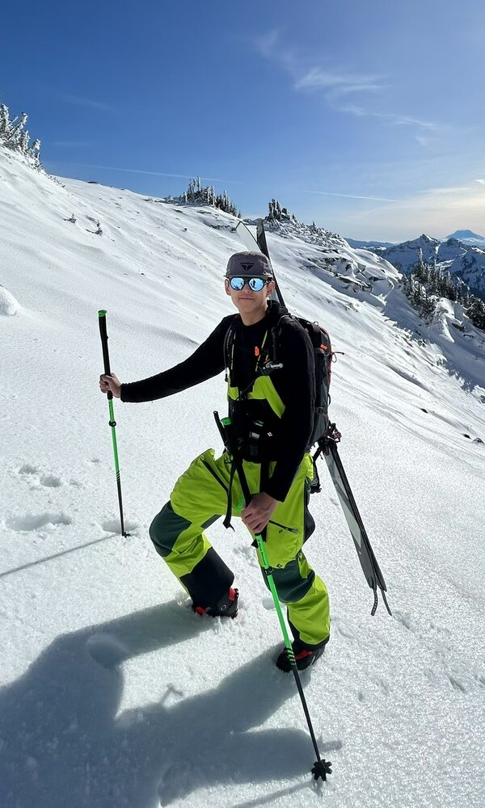

Taolue (Kurt) Yang
Ph.D. Candidate in Computer Science, Temple University
I build systems that make AI and data-intensive science faster and cheaper by removing redundancy: compressing data, lowering numerical precision, and avoiding repeated computation, while keeping results exact or within guaranteed error bounds. I work mostly on GPUs, but also on TPUs and CPUs.
I am advised by Prof. Sian Jin and work closely with Prof. Xinghua (Mindy) Shi on genomic data. Along the way I have interned twice at Google and once at Oracle, and my changes to NVIDIA's NeMo-RL and ModelOpt were merged upstream. Outside of work, you will usually find me skiing.
News
- Aug 2026Finished my internship on Google Cloud AI (Vertex AI), working on LLM quantization and quantization-aware RL training.
- Jul 2026CuVert-Q received the Best Paper Award at ACM-BCB 2026.
- Jul 2026GFAz published at ICS 2026.
- 2026Two papers accepted to SC'26 and one to VLDB'26.
Research
Publications
Full list on Google Scholar.
Conference Papers
- CuVert-Q: Resolving the Throughput-Ratio Tradeoff in Genomic Sequence Data Compression via GPU Acceleration
- GFAz: State-of-the-Art Graphical Fragment Assembly Compression
- SeqBench: A Benchmark Suite for Lossless and Lossy Compression of Sequence Data
- TOPIQ: Statistical Error Propagation for Quantity-of-Interest Prediction under Lossy Compression
- 3D Gaussian Splatting for Scientific Particle Data Compression and Rendering
- Error-Bounded Point Cloud Compression Using Truncated Octahedron Quantization
- PackKV: Reducing KV Cache Memory Footprint through LLM-Aware Lossy Compression
- EmbdC: Error-Bounded Lossy Video Embedding Compression for On-Device LLM Inference
- Advancing Scientific Data Compression via Cross-Field Prediction
Workshop and Short Papers
- GPUFast-Q: Novel High-Throughput Sequence Data Compression on GPUs Using Fine-Grained Parallelism
- GPUFASTQLZ: An Ultra Fast Compression Methodology for Fastq Sequence Data on GPUs
- Accurate Performance Modeling and Uncertainty Analysis of Lossy Compression in Scientific Applications
- Enhancing Lossy Compression through Cross-Field Information for Scientific Applications
Under Review and In Preparation
- Computing over Compression: Pangenome Analytics Directly on Grammar-Compressed Graphs
- Exact Per-Layer Computation Sharing for Convolutional Sequence Models Across Haplotypes
- KVComp: A High-Performance, LLM-Aware, Lossy Compression Framework for KV Cache
Industry Experience
- Built a large-scale post-training quantization evaluation framework for LLMs across GPU generations, and used it to set hardware-aware deployment recipes.
- Made quantization-aware RL training 70% faster in NVIDIA NeMo-RL by caching fake-quantized weights, and fixed a Megatron weight-folding bug in NVIDIA ModelOpt; both were merged upstream.
- Optimized Mixture-of-Experts LLM inference on TPUs, implemented Mixture of Block Attention in JAX, and built an OpenAI-compatible serving API for MaxText.
- Built an 8-bit quantized LLM inference stack for AMD CPUs with AVX-512 and int8 GEMM kernels, with 4.5× faster prefill than llama.cpp.
- Developed a relaxed speculative decoding algorithm that speeds up generation by 1.5× (patent filed).
Open Source
Upstream contributions to NVIDIA NeMo-RL (#3226, #3441, #3556) and NVIDIA ModelOpt (#2131). My research software includes CuVert-Q, GFAz, and SeqBench.
Teaching
Lab instructor at Temple University for CIS 1068: Program Design and Abstraction, the first required programming course in the CS major (Spring 2024, two sections; Fall 2024), and for CIS 2109: Database Management Systems (Fall 2024). I ran weekly labs, taught Java, searching and sorting, and SQL, graded, and held office hours.
Service
Reviewer for ACDSA 2026 and 2027 and ICECET 2026.